1Unit 8.1 | DOK 1
For each table, state whether the pattern is most likely linear, quadratic, or exponential. Name the clue you used.
| x | 0 | 1 | 2 | 3 | 4 |
|---|---|---|---|---|---|
| A | 4 | 7 | 10 | 13 | 16 |
| B | 1 | 4 | 9 | 16 | 25 |
| C | 2 | 6 | 18 | 54 | 162 |
likely family:
evidence:
For each table, state whether the pattern is most likely linear, quadratic, or exponential. Name the clue you used.
| x | 0 | 1 | 2 | 3 | 4 |
|---|---|---|---|---|---|
| A | 4 | 7 | 10 | 13 | 16 |
| B | 1 | 4 | 9 | 16 | 25 |
| C | 2 | 6 | 18 | 54 | 162 |
The table shows a model candidate.
| x | 0 | 1 | 2 | 3 | 4 |
|---|---|---|---|---|---|
| y | 3 | 6 | 11 | 18 | 27 |
Decide whether a linear, quadratic, or exponential model is most appropriate. Use first differences, second differences, or ratios as evidence.
For $g(x)=(x-3)^2+2$, name the parent family and describe the transformation from $f(x)=x^2$.
The figure shows a parent graph and a transformed graph. Describe the shift and identify the new key point.
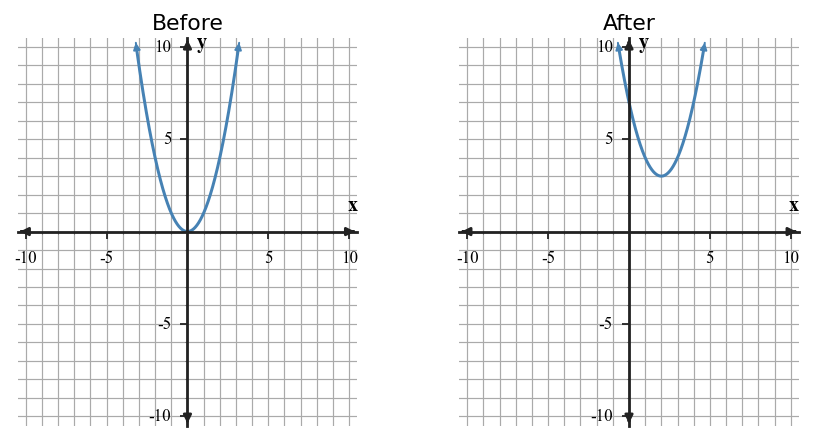
Solve $|x-4|=9$. Show the two cases or explain the distance meaning.
Use the graph to describe the domain intervals, whether each endpoint is included, and the output at the break point.
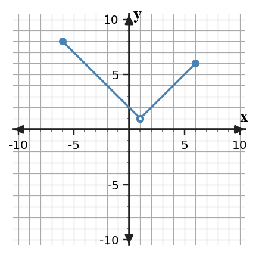
Use the scatterplot to choose linear, quadratic, or exponential as the best model family. Justify with the overall shape and make a reasonable next-value prediction.
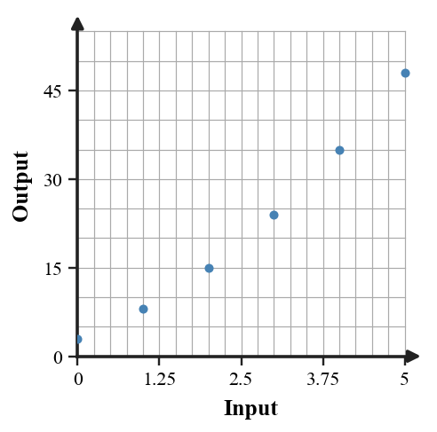
A student claims the table is exponential because the outputs grow faster each time. Critique the claim using differences and ratios, then choose the better family.
| x | 0 | 1 | 2 | 3 | 4 |
|---|---|---|---|---|---|
| y | 2 | 5 | 10 | 17 | 26 |
Match each clue to the most likely family: constant first differences, constant second differences, constant ratio, V-shaped graph.
The graph shows two functions labeled A and B. Compare graphing and algebraic methods for solving their intersection. State which method gives a more exact answer and why.
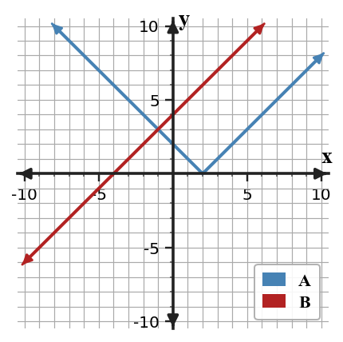
For each table, state whether the pattern is most likely linear, quadratic, or exponential. Name the clue you used.
| x | 0 | 1 | 2 | 3 | 4 |
|---|---|---|---|---|---|
| A | 5 | 11 | 17 | 23 | 29 |
| B | 0 | 1 | 4 | 9 | 16 |
| C | 3 | 12 | 48 | 192 | 768 |
The table shows a model candidate.
| x | 0 | 1 | 2 | 3 | 4 |
|---|---|---|---|---|---|
| y | 5 | 10 | 20 | 40 | 80 |
Decide whether a linear, quadratic, or exponential model is most appropriate. Use first differences, second differences, or ratios as evidence.
For $g(x)=|x+4|-1$, name the parent family and describe the transformation from $f(x)=|x|$.
The figure shows a parent graph and a transformed graph. Describe the shift and identify the new key point.
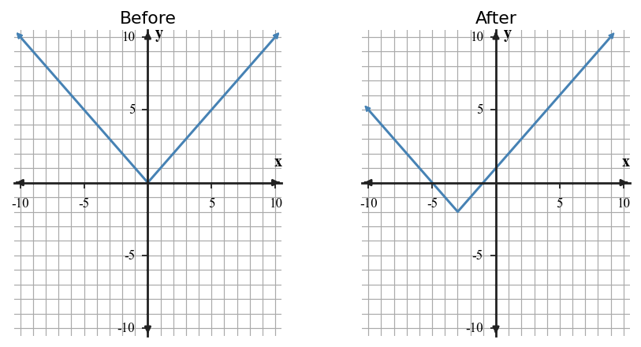
Solve $|2x+6|=10$. Show the two cases or explain the distance meaning.
Use the graph to describe the domain intervals, whether each endpoint is included, and the output at the break point.
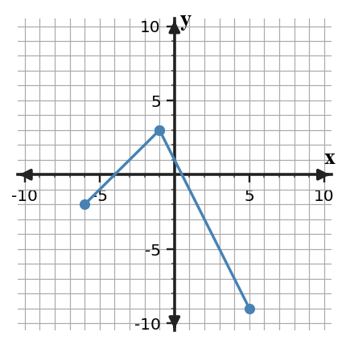
Use the scatterplot to choose linear, quadratic, or exponential as the best model family. Justify with the overall shape and make a reasonable next-value prediction.
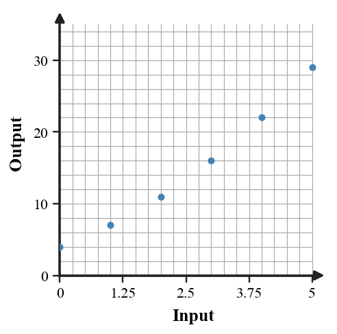
A student claims the table is linear because the inputs increase evenly. Critique the claim using differences and ratios, then choose the better family.
| x | 0 | 1 | 2 | 3 | 4 |
|---|---|---|---|---|---|
| y | 3 | 6 | 12 | 24 | 48 |
Match each clue to the most likely family: horizontal asymptote, vertex with symmetry, steady rate of change, absolute distance from a center.
The graph shows two functions labeled A and B. Compare graphing and algebraic methods for solving their intersection. State which method gives a more exact answer and why.
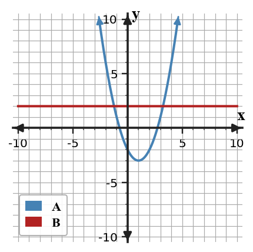
Classify each rule as linear, quadratic, exponential, or absolute value. State one feature that gives it away.
A rental cost starts at 18 dollars and increases by 7 dollars each hour. Choose a linear, quadratic, or exponential model, write an equation, and predict the cost for 5 hours.
For $g(x)=-2(x+1)^2+5$, name the parent family and describe the reflection/stretch/translation.
The figure shows a parent graph and a transformed graph. Describe the reflection/stretch/translation and identify the vertex.
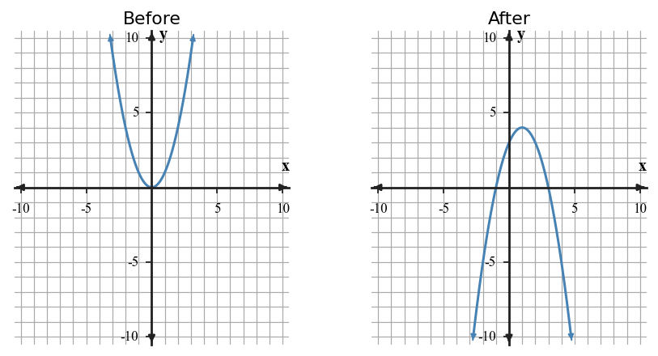
For $y=|x+3|-5$, identify the vertex and tell whether it opens up or down.
Write a possible two-piece rule for the graph. Use the open and closed endpoints correctly.
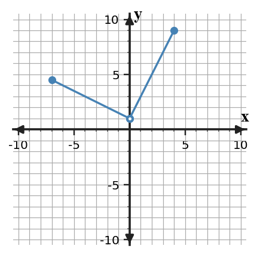
Use the scatterplot to decide whether a linear or exponential model is more reasonable. Explain with multiplicative or additive evidence.
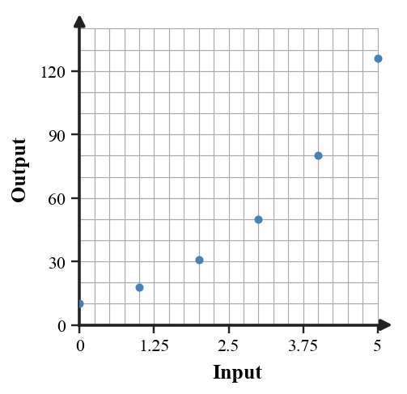
The equation $y=3x+2$ and the table are supposed to match. Find the first mismatch, explain how you know, and revise one value.
| x | 0 | 1 | 2 | 3 |
|---|---|---|---|---|
| y | 2 | 5 | 7 | 11 |
For $y=2|x-5|+1$, name the family and the key feature shown by the equation.
A student predicts far outside the shown data using one model only. Use the graph to explain one reason the prediction may be unreasonable and one way to check it.
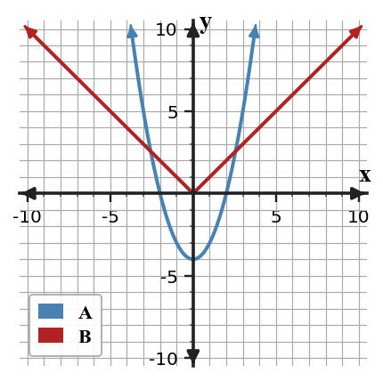
Classify each rule as linear, quadratic, exponential, or absolute value. State one feature that gives it away.
A plant height starts at 12 cm and is multiplied by 1.25 each week. Choose a linear, quadratic, or exponential model, write an equation, and predict the height after 4 weeks.
For $g(x)=3|x-2|-4$, name the parent family and describe the stretch/translation.
The figure shows a parent graph and a transformed graph. Describe the stretch/translation and identify the vertex.
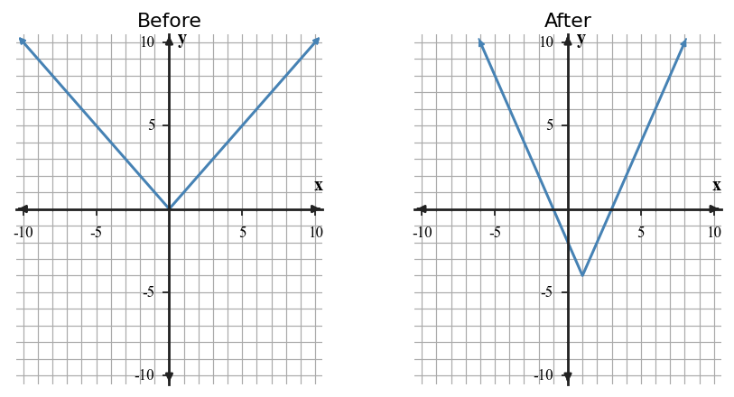
For $y=-|x-1|+4$, identify the vertex and tell whether it opens up or down.
Write a possible two-piece rule for the graph. Use the open and closed endpoints correctly.
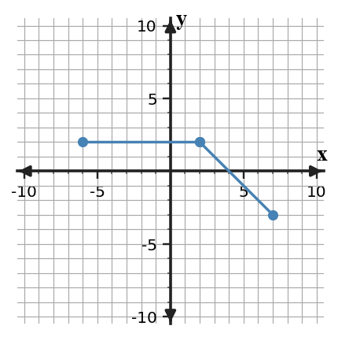
Use the scatterplot to decide whether a linear or exponential model is more reasonable. Explain with multiplicative or additive evidence.
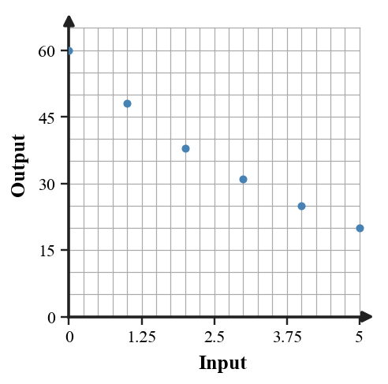
The equation $y=x^2+1$ and the table are supposed to match. Find the first mismatch, explain how you know, and revise one value.
| x | 0 | 1 | 2 | 3 |
|---|---|---|---|---|
| y | 1 | 2 | 6 | 10 |
For $y=4(0.7)^x$, name the family and one graph feature to expect.
A student predicts far outside the shown data using one model only. Use the graph to explain one reason the prediction may be unreasonable and one way to check it.
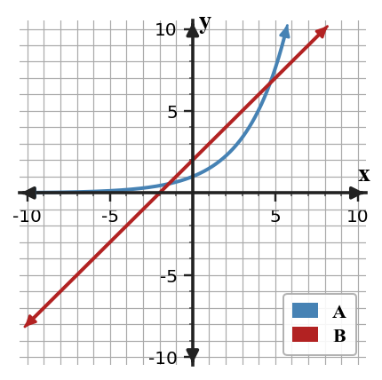
Use the before/after graphs to write a possible transformation rule in the form $g(x)=a(x-h)^2+k$.
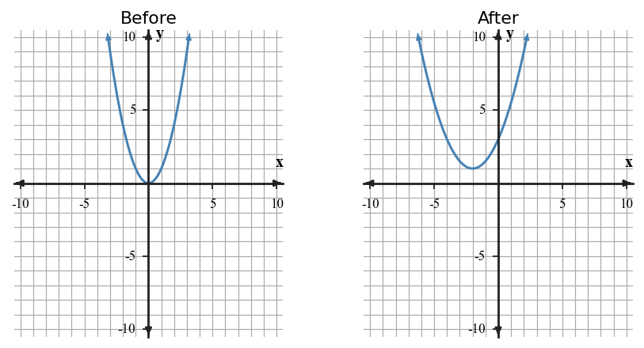
Decide which form is most useful to identify a vertex: standard quadratic, vertex form, factored form, or exponential form. Explain briefly.
Use the table to choose a model family and write a matching equation.
| x | 0 | 1 | 2 | 3 |
|---|---|---|---|---|
| y | 9 | 16 | 23 | 30 |
Explain why this graph cannot be represented by one linear rule over the whole shown domain.
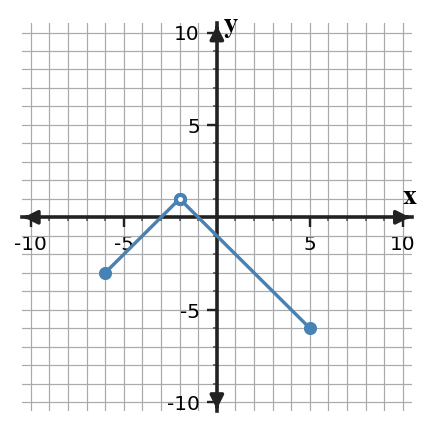
A table has constant second differences but not constant first differences. Name the most likely family and explain the evidence.
A linear model fits data from day 0 to day 5, but the real context begins to level off after day 8. Analyze why the model may fail for long-term prediction and recommend a cautious use.
Complete the description: $g(x)=f(x-5)+3$ moves the graph of $f$ ______ and ______.
Use the two functions to make a recommendation: solve by graphing first, algebra first, or both. Defend the recommendation with graph structure.
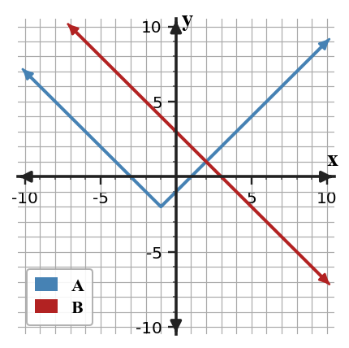
Evaluate the piecewise rule for $x=-2$, $x=1$, and $x=4$: $f(x)=x+5$ for $x\lt 2$ and $f(x)=10-x$ for $x\ge 2$.
Use the scatterplot and trend line to estimate a value at input 6. Explain why interpolation is safer than far extrapolation.
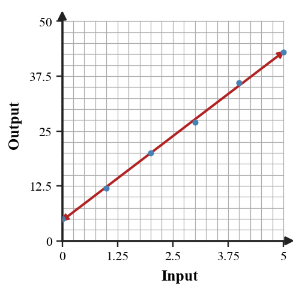
Use the before/after graphs to write a possible transformation rule in the form $g(x)=a|x-h|+k$.
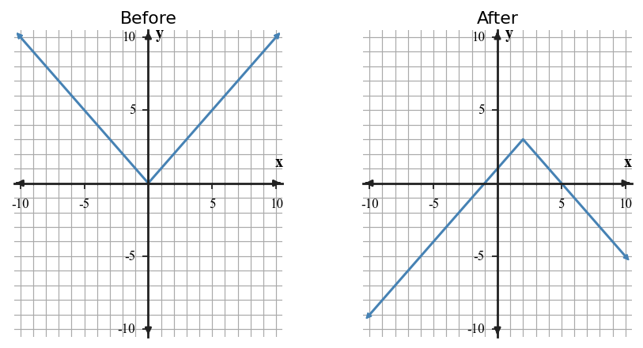
Decide which form is most useful to identify a multiplier: standard quadratic, vertex form, factored form, or exponential form. Explain briefly.
Use the table to choose a model family and write a matching equation.
| x | 0 | 1 | 2 | 3 |
|---|---|---|---|---|
| y | 6 | 18 | 54 | 162 |
Explain why this graph cannot be represented by one linear rule over the whole shown domain.
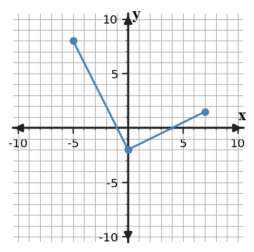
A table has a constant ratio but not constant first differences. Name the most likely family and explain the evidence.
A quadratic model fits height data during a short interval, but the context cannot keep increasing forever. Analyze why the model may fail for long-term prediction and recommend a cautious use.
Complete the description: $g(x)=2f(x+1)$ moves and changes the graph of $f$ by ______.
Use the two functions to make a recommendation: solve by graphing first, algebra first, or both. Defend the recommendation with graph structure.
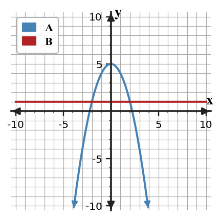
Evaluate the piecewise rule for $x=-3$, $x=0$, and $x=5$: $f(x)=2x+1$ for $x\lt 1$ and $f(x)=6$ for $x\ge 1$.
Use the scatterplot and trend line to estimate a value at input 6. Explain why interpolation is safer than far extrapolation.
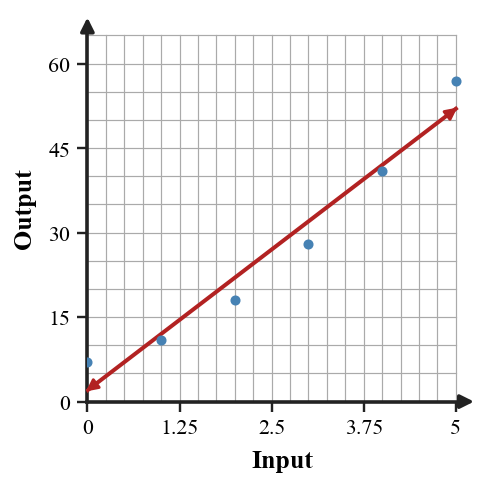
Use the scatterplot to explain why a single linear model may not capture the whole pattern. Suggest a better family or a limitation.
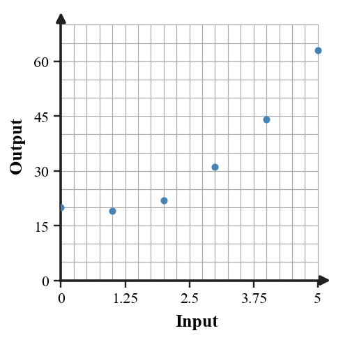
Write an equation for a quadratic parent shifted left 2 and down 6.
Analyze the structure of the two functions. Decide whether they appear to have no, one, or two intersections in the viewing window, then explain what more evidence would make the answer exact.
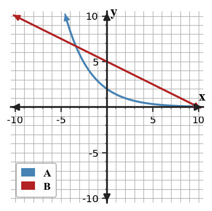
A table has constant first differences. Name the most likely family and explain how you know.
Two students choose different models for the same data: one linear and one exponential. Describe two pieces of evidence you would ask for before deciding which model is more appropriate.
State the domain and vertex for the context model $d(t)=|t-6|$ for ${0\le t\le 12}$.
A student says the data must be linear because the outputs increase. Test the claim with differences or ratios, then choose the best model family.
| x | 0 | 1 | 2 | 3 |
|---|---|---|---|---|
| y | 2 | 8 | 18 | 32 |
For each expression, name one useful feature it reveals: $y=3x+9$, $y=(x-2)^2+4$, $y=5(1.2)^x$.
Interpret the graph as a changing-rate context. Describe what changes at the break point.
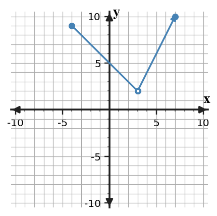
Compare the parent and transformed graph. Explain which features changed and which stayed the same.
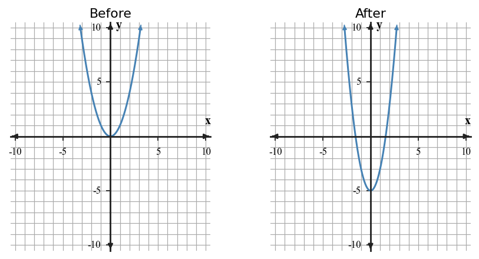
Use the scatterplot to explain why a single linear model may not capture the whole pattern. Suggest a better family or a limitation.
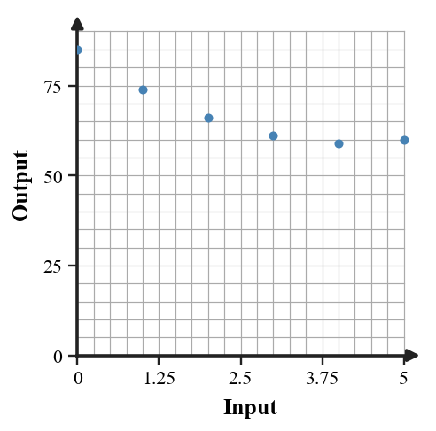
Write an equation for an absolute value parent shifted right 4 and up 1.
Analyze the structure of the two functions. Decide whether they appear to have no, one, or two intersections in the viewing window, then explain what more evidence would make the answer exact.
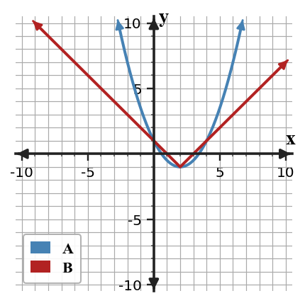
A graph is V-shaped with a lowest point at $(2,-3)$. Name the most likely family and the key point.
Two students choose different models for the same data: one quadratic and one exponential. Describe two pieces of evidence you would ask for before deciding which model is more appropriate.
State the domain and vertex for the context model $h(t)=|2t-8|$ for ${0\le t\le 8}$.
A student says the data must be exponential because the outputs grow quickly. Test the claim with differences or ratios, then choose the best model family.
| x | 0 | 1 | 2 | 3 |
|---|---|---|---|---|
| y | 4 | 9 | 16 | 25 |
For each expression, name one useful feature it reveals: $y=|x+1|-6$, $y=-2x+5$, $y=10(0.8)^x$.
Interpret the graph as a changing-rate context. Describe what changes at the break point.
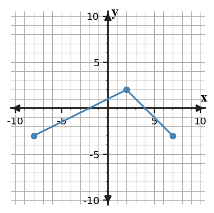
Compare the parent and transformed graph. Explain which features changed and which stayed the same.
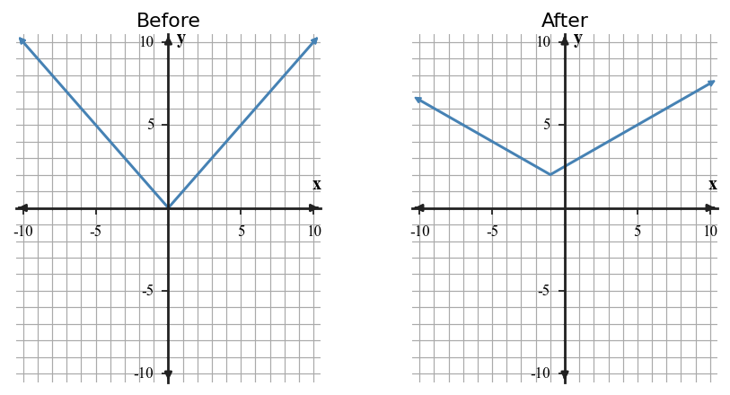